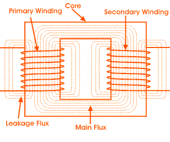

Resistance & Leakage Reactance or Impedance of Transformer
Leakage Reactance of Transformer
All the flux in transformer will not be able to link with both the primary and secondary windings. A small portion of flux will link either winding but not both. This portion of flux is called leakage flux. Due to this leakage flux in transformer, there will be a self-reactance in the concerned winding. This self-reactance of transformer is alternatively known as leakage reactance of transformer. This self-reactance associated with resistance of transformer is impedance. Due to this impedance of transformer, there will be voltage drops in both primary and secondary transformer windings.
Resistance of Transformer
Generally, both primary and secondary windings of electrical power transformer are made of copper. Copper is a very good conductor of electric current but not a super conductor. Actually, super conductor and super conductivity both are conceptual, practically they are not available. So both windings will have some resistance. This internal resistance of both primary and secondary windings is collectively known as resistance of transformer.
Impedance of Transformer
As we said, both primary and secondary windings will have resistance and leakage reactance. These resistance and reactance will be in combination, is nothing but impedance of transformer. If R1 & R2 and X1 & X2 are primary & secondary resistance & leakage reactance of transformer respectively, then Z1 & Z2 impedance of primary & secondary windings are respectively,

The Impedance of transformer plays a vital role during parallel operation of transformer.
Leakage Flux in Transformer
In ideal transformer, all the flux will link with both primary and secondary windings but in reality, it is impossible to link all the flux in transformer with both primary and secondary windings. Although maximum flux will link with both windings through the core of transformer but still there will be a small amount of flux which will link either winding but not both. This flux is called leakage flux which will pass through the winding insulation and transformer insulating oil instead of passing through core. Due to this leakage flux in transformer, both primary and secondary windings have leakage reactance. The reactance of transformer is nothing but leakage reactance of transformer. This phenomenon in transformer is known as Magnetic leakage.

Voltage drops in the windings occur due to impedance of transformer. Impedance is combination of resistance and leakage reactance of transformer. If we apply voltage V1 across primary of transformer, there will be a component I1X1 to balance primary self induced emf due to primary leakage reactance. (Here, X1 is primary leakage reactance). Now if we also consider voltage drop due to primary resistance of transformer, then voltage equation of a transformer can easily be written as,
Similarly for secondary leakage reactance, the voltage equation of secondary side is,
Here in the figure above, the primary and secondary windings are shown in separate limbs and this arrangement could result a large leakage flux in transformer because there is a big room for leakage. Leakage in primary and secondary windings could be eliminated if the windings could be made to occupy the same space. This of course is physically impossible but, by placing secondary and primary in concentric manner can solve the problem in good extent.
 by
by